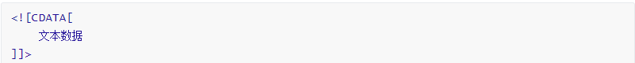

XML&Dom4j
第1章 XML
1.1 XML介绍
1.1.1 什么是XML
- XML 指可扩展标记语言（EXtensible Markup Language）
- XML 是一种标记语言，很类似 HTML，HTML文件也是XML文档
- XML 的设计宗旨是传输数据，而非显示数据
- XML 标签没有被预定义。您需要自行定义标签。
- XML 被设计为具有自我描述性(就是易于阅读)。
- XML 是 W3C 的推荐标准
1.1.2 XML 与 HTML 的主要差异
- XML 不是 HTML 的替代。
- XML 和 HTML 为不同的目的而设计。
- XML 被设计为传输和存储数据，其焦点是数据的内容。
- HTML 被设计用来显示数据，其焦点是数据的外观。
- HTML 旨在显示信息，而 XML 旨在传输信息。
1.1.3 XML文件案例编写person.xml文件
1.1.3.1 需求
编写xml文档，用于描述人员信息，person代表一个人员，id是人员的属性代表人员编号。人员信息包括age年龄、name姓名、sex性别信息。
1.1.3.2 效果
使用浏览器运行person.xml文件效果如下

1.1.3.3 实现步骤
步骤1：使用idea开发工具，选择当前项目鼠标右键新建“”，
步骤2：编写文件person.xml文件，内容如下：
<?xml version="1.0" encoding="UTF-8"?>
<person id="110">
<age>18</age> <!--年龄-->
<name>张三</name> <!--姓名-->
<sex/> <!--性别-->
</person>步骤3：点击idea右侧浏览器运行
1.2 XML作用
XML在企业开发中主要有两种应用场景：
1）XML可以存储数据 , 作为数据交换的载体(使用XML格式进行数据的传输)。
2）XML也可以作为配置文件，例如后面框架阶段我们学习的Spring框架的配置(applicationContext.xml)都是通过XML进行配置的（企业开发中经常使用的）
1.3 XML的组成元素
XML文件中常见的组成元素有:文档声明、元素、属性、注释、转义字符、字符区。
1.3.1 文档声明
<?xml version="1.0" encoding="utf-8" ?>- 使用IDE创建xml文件时就带有文档声明.
- 文档声明必须为<?xml开头，以？>结束
- 文档声明必须从文档的0行0列位置开始
- 文档声明中常见的两个属性：
- version：指定XML文档版本。必须属性，这里一般选择1.0；
- enconding：指定当前文档的编码，可选属性，默认值是utf-8；
1.3.2 元素element
格式1:<person></person>
格式2:<person/>- 元素是XML文档中最重要的组成部分；
- 普通元素的结构由开始标签、元素体、结束标签组成。
- 元素体：元素体可以是元素，也可以是文本，例如：
<person><name>张三</name></person> - 空元素：空元素只有标签，而没有结束标签，但元素必须自己闭合，例如：
<sex/> - 元素命名
- 区分大小写
- 不能使用空格，不能使用冒号
- 不建议以XML、xml、Xml开头
- 格式化良好的XML文档，有且仅有一个根元素。
1.3.3 属性
<person id="110">- 属性是元素的一部分，它必须出现在元素的开始标签中
- 属性的定义格式：属性名=“属性值”，其中属性值必须使用单引或双引号括起来
- 一个元素可以有0~N个属性，但一个元素中不能出现同名属性
- 属性名不能使用空格 , 不要使用冒号等特殊字符，且必须以字母开头
1.3.4 注释
<!--注释内容-->XML的注释与HTML相同，既以<!--开始，-->结束。
1.3.5 转义字符
XML中的转义字符与HTML一样。因为很多符号已经被文档结构所使用，所以在元素体或属性值中想使用这些符号就必须使用转义字符（也叫实体字符），例如：”>”、”<”、”‘“、”””、”&”。
| 字符 | 预定义的转义字符 | 说明 |
|---|---|---|
| < | < |
小于 |
| > | > |
大于 |
| “ | " |
双引号 |
| ‘ | ' |
单引号 |
| & | & |
和号 |
注意：严格地讲，在 XML 中仅有字符 “<”和”&” 是非法的。省略号、引号和大于号是合法的，但是把它们替换为实体引用是个好的习惯。
假如您在 XML 文档中放置了一个类似 “<” 字符，那么这个文档会产生一个错误，这是因为解析器会把它解释为新元素的开始。因此你不能这样写：
<message>if salary < 1000 then</message>为了避免此类错误，需要把字符 “<” 替换为实体引用，就像这样：
<message>if salary < 1000 then</message>1.3.6 字符区(了解)

- CDATA 指的是不应由 XML 解析器进行解析的文本数据（Unparsed Character Data）
- CDATA 部分由 ““ 结束；
- 当大量的转义字符出现在xml文档中时，会使XML文档的可读性大幅度降低。这时如果使用CDATA段就会好一些。
注意：
CDATA 部分不能包含字符串 “]]>”。也不允许嵌套的 CDATA 部分。
标记 CDATA 部分结尾的 “]]>” 不能包含空格或折行。
1.4 XML文件的约束
在XML技术里，可以编写一个文档来约束一个XML文档的书写规范，这称之为XML约束。
常见的xml约束：DTD、Schema
注意:我们对于约束的要求是能通过已写好的约束文件编写xml文档.
1.4.1 DTD约束
1.4.1.1 概念
DTD是文档类型定义（Document Type Definition）。DTD 可以定义在 XML 文档中出现的元素、这些元素出现的次序、它们如何相互嵌套以及XML文档结构的其它详细信息。
1.4.1.2 约束体验
体验效果说明：当编写xml文档时不符合指定dtd约束时，进行提示xml编写错误，如下图：

体验步骤:
步骤1：复制bookshelf.dtd文件
步骤2：bookshelf.dtd文件内容如下
步骤三：新建books.xml，代码如下
<?xml version="1.0" encoding="UTF-8"?>
<!DOCTYPE 书架 SYSTEM "bookshelf.dtd"><!--指定使用bookshelf.dtd文件约束当前xml文档-->
<书架>
<书>
<书名>JavaWeb开发教程</书名>
<作者>张孝祥</作者>
<售价>100.00元</售价>
</书>
<书>
<书名>三国演义</书名>
<作者>罗贯中</作者>
<售价>100.00元</售价>
<测试>hello</测试><!--不符合约束，书的子元素必须为书名、作者、售价-->
</书>
</书架>
步骤四：idea开发工具books.xml的dtd约束验证不通过的效果如下

1.4.1.3 dtd学习要求
在企业实际开发中，我们很少自己编写DTD约束文档，通常情况下通过框架提供的DTD约束文档编写对应的XML文档。所以这一知识点的要求是可以根据DTD约束文档内容编写XML文档。
1.4.1.4 语法(了解)
#####文档声明(了解)
内部DTD，在XML文档内部嵌入DTD，只对当前XML有效。
<?xml version="1.0" encoding="UTF-8"?> <!DOCTYPE 根元素 [...//具体语法]><!--内部DTD--> <根元素> </根元素>外部DTD—本地DTD，DTD文档在本地系统上，企业内部自己项目使用。
<?xml version="1.0" encoding="UTF-8"?> <!DOCTYPE 根元素 SYSTEM "bookshelf.dtd"><!--外部本地DTD--> <根元素> </根元素>外部DTD—公共DTD，DTD文档在网络上，一般都有框架提供 , 也是我们使用最多的.
<?xml version="1.0" encoding="UTF-8"?> <!DOCTYPE web-app PUBLIC "-//Sun Microsystems, Inc.//DTD Web Application 2.3//EN" "http://java.sun.com/dtd/web-app_2_3.dtd"> <web-app> </web-app>
元素声明(了解)
约束元素的嵌套层级
语法
<!ELEMENT 父标签 （子标签1，子标签2，…）>代码
约束元素体里面的数据
语法
<!ELEMENT 标签名字 标签类型>标签类型
标签类型 代码写法 说明 PCDATA (#PCDATA) 被解释的字符串数据 EMPTY EMPTY 即空元素，例如\ ANY ANY 即任意类型 代码
数量词(掌握)
数量词符号 含义 * 表示元素可以出现0到多个 + 表示元素可以出现至少1个 ? 表示元素可以是0或1个 , 表示元素需要按照顺序显示 | 表示元素需要选择其中的某一个
属性声明(了解)
语法
属性类型
| 属性类型 | 含义 |
|---|---|
| CDATA | 代表属性是文本字符串， eg: |
| ID | 代码该属性值唯一，不能以数字开头， eg: |
| ENUMERATED | 代表属性值在指定范围内进行枚举 Eg:<!ATTLIST属性名 (社科类|工程类|教育类) “社科类”> “社科类”是默认值，属性如果不设置默认值就是”社科类” |
属性说明
| 属性说明 | 含义 |
|---|---|
| #REQUIRED | 代表属性是必须有的 |
| #IMPLIED | 代表属性可有可无 |
| #FIXED | 代表属性为固定值，实现方式：book_info CDATA #FIXED “固定值” |
代码
id ID #REQUIRED
编号 CDATA #IMPLIED
出版社 (清华|北大|传智播客) "传智播客"
type CDATA #FIXED "IT"
>
1.4.2 schema约束
1.4.2.1 概念
Schema 语言也可作为 XSD（XML Schema Definition）。
Schema 比DTD强大，是DTD代替者。
Schema 本身也是XML文档，单Schema文档扩展名为xsd，而不是xml。
Schema 功能更强大，数据类型约束更完善。
1.4.2.1 约束体验
体验效果说明：体验schema约束XML文档中对元素体数据类型的约束。效果如下：

DTD约束无法对具体数据类型进行约束,所以开发工具没有任何错误提示，如下效果：

实现步骤
步骤1：复制schema约束文件bookshelf.xsd，其中已对售价约束了数据类型，代码如下
<?xml version="1.0" encoding="UTF-8" ?>
<!--
传智播客DTD教学实例文档.将注释中的以下内容复制到要编写的xml的声明下面
复制内容如下:
<书架 xmlns="http://www.itcast.cn"
xmlns:xsi="http://www.w3.org/2001/XMLSchema-instance"
xsi:schemaLocation="http://www.itcast.cn bookshelf.xsd"
>
-->
<xs:schema xmlns:xs="http://www.w3.org/2001/XMLSchema"
targetNamespace="http://www.itcast.cn"
elementFormDefault="qualified">
<xs:element name='书架' >
<xs:complexType>
<xs:sequence maxOccurs='unbounded' >
<xs:element name='书' >
<xs:complexType>
<xs:sequence>
<xs:element name='书名' type='xs:string' />
<xs:element name='作者' type='xs:string' />
<xs:element name='售价' type='xs:double' />
</xs:sequence>
</xs:complexType>
</xs:element>
</xs:sequence>
</xs:complexType>
</xs:element>
</xs:schema>
步骤2：新建books2.xml使用schema约束文件bookshelf.xsd，代码如下
<?xml version="1.0" encoding="UTF-8"?>
<书架
xmlns="http://www.itcast.cn"
xmlns:xsi="http://www.w3.org/2001/XMLSchema-instance"
xsi:schemaLocation="http://www.itcast.cn bookshelf.xsd"
><!--指定schema文档约束当前XML文档-->
<书>
<书名>JavaScript网页开发</书名>
<作者>张孝祥</作者>
<售价>abc</售价>
</书>
</书架>
步骤3：开发工具提示效果
1.4.2.2 名称空间
一个XML文档最多可以使用一个DTD文件,但一个XML文档中使用多个Schema文件，若这些Schema文件中定义了相同名称的元素时,使用的时候就会出现名字冲突。这就像一个Java文件中使用了import java.util.*和import java.sql.*时，在使用Date类时，那么就不明确Date是哪个包下的Date了。同理 , 在XML文档中就需要通过名称空间(namespace)来区分元素和属性是来源于哪个约束中的。名称空间就在在根元素后面的内容 , 使用xmlns到引入约束 。
当一个XML文档中需要使用多个Schema文件的时候 , 有且仅有一个使用缺省的 , 其他的名称空间都需要起别名 。参考资料中的 applicationContext.xml文件(spring框架的配置文件)
xmlns="http://www.itcast.cn"
xmlns:aa="http://java.sun.com"
总之名称空间就是用来处理元素和属性的名称冲突问题，与Java中的包是同一用途。如果每个元素和属性都有自己的名称空间，那么就不会出现名字冲突问题，就像是每个类都有自己所在的包一样，那么类名就不会出现冲突。
1.4.2.3 schema学习要求
虽然schema功能比dtd强大，但是编写要比DTD复杂，同样以后我们在企业开发中也很少会自己编写schema文件。
xml编写与约束内容已经完成了，根据xml的作用我们了解到，无论是xml作为配置文件还是数据传输，我们的程序都要获取xml文档中的数据以便我们进行具体的业务操作，接下来我们就要学习XML解析技术Dom4j。
第2章 Dom4j
2.1 XML解析
2.1.1 解析概述
当将数据存储在XML后，我们就希望通过程序获取XML的内容。如果我们使用Java基础所学的IO知识是可以完成的，不过你学要非常繁琐的操作才可以完成，且开发中会遇到不同问题（只读、读写）。人们为不同问题提供不同的解析方式，使用不同的解析器进行解析，方便开发人员操作XML。
2.1.2 解析方式和解析器
开发中比较常见的解析方式有三种，如下：
DOM：要求解析器把整个XML文档装载到内存，并解析成一个Document对象
a）优点：元素与元素之间保留结构关系，故可以进行增删改查操作。
b）缺点：XML文档过大，可能出现内存溢出
SAX：是一种速度更快，更有效的方法。她逐行扫描文档，一边扫描一边解析。并以事件驱动的方式进行具体解析，没执行一行，都触发对应的事件。（了解）
a）优点：处理速度快，可以处理大文件
b）缺点：只能读，逐行后将释放资源，解析操作繁琐。
PULL：Android内置的XML解析方式，类似SAX。（了解）
解析器，就是根据不同的解析方式提供具体实现。有的解析器操作过于繁琐，为了方便开发人员，有提供易于操作的解析开发包

常见的解析开发包
- JAXP：sun公司提供支持DOM和SAX开发包
- Dom4j：比较简单的的解析开发包(常用)
- JDom：与Dom4j类似
- Jsoup：功能强大DOM方式的XML解析开发包，尤其对HTML解析更加方便(项目中讲解)
2.3 Dom4j的基本使用
2.3.1 DOM解析原理及结构模型
解析原理
XML DOM 和 HTML DOM一样，XML DOM 将整个XML文档加载到内存，生成一个DOM树，并获得一个Document对象，通过Document对象就可以对DOM进行操作。以下面books.xml文档为例。
<?xml version="1.0" encoding="UTF-8"?> <books> <book id="0001"> <name>JavaWeb开发教程</name> <author>张孝祥</author> <sale>100.00元</sale> </book> <book id="0002"> <name>三国演义</name> <author>罗贯中</author> <sale>100.00元</sale> </book> </books>结构模型

DOM中的核心概念就是节点，在XML文档中的元素、属性、文本，在DOM中都是节点！所有的节点都封装到了Document对象中。
引入dom4j的jar包
需要引入“jar/dom4j-1.6.1.jar” , 在IDEA中，选择项目鼠标右键—>弹出菜单–>open Module settings”–>Dependencies–>+–>JARs or directories…
找到dom4j-1.6.1.jar,成功添加之后点击”OK” 即可.
- dom4j 必须使用核心类SaxReader加载xml文档获得Document，通过Document对象获得文档的根元素，然后就可以操作了。
2.3.2 常用的方法
SaxReader对象
| 方法 | 作用 |
|---|---|
| new SaxReader() | 构造器 |
| Document read(String url) | 加载执行xml文档 |
Document对象
| 方法 | 作用 |
|---|---|
| Element getRootElement() | 获得根元素 |
Element对象
| 方法 | 作用 |
|---|---|
| List elements([String ele] ) | 获得指定名称的所有子元素。可以不指定名称 |
| Element element([String ele]) | 获得指定名称第一个子元素。可以不指定名称 |
| String getName() | 获得当前元素的元素名 |
| String attributeValue(String attrName) | 获得指定属性名的属性值 |
| String elementText(Sting ele) | 获得指定名称子元素的文本值 |
| String getText() | 获得当前元素的文本内容 |
2.3.3 方法演示
复制资料下的常用xml中”books.xml”,内容如下:
<?xml version="1.0" encoding="UTF-8"?>
<books>
<book id="0001">
<name>JavaWeb开发教程</name>
<author>张孝祥</author>
<sale>100.00元</sale>
</book>
<book id="0002">
<name>三国演义</name>
<author>罗贯中</author>
<sale>100.00元</sale>
</book>
</books>
注意:为了便于解析,此xml中没有添加约束
解析此文件,获取每本书的id值,以及书本名称,作者名称和价格.
public class Demo {
public static void main(String[] args) throws DocumentException {
SAXReader reader = new SAXReader();
Document document = reader.read(Demo.class.getResourceAsStream("/books.xml"));
//获取根元素 books
Element elemRoot = document.getRootElement();
//获取根元素的所有子元素 book
List<Element>list = elemRoot.elements();
//遍历集合 获取每一个book
for(Element element : list){
//获取book的id属性
String id =element.attributeValue("id");
System.out.println("id : "+ id);
//获取book下的所有子元素 name,author,sale
List<Element>listElem = element.elements();
//遍历集合 获取每一个子元素
for(Element elem : listElem){
//元素名
String name = elem.getName();
//文本值
String text = elem.getText();
System.out.println("--- " + name + " : " + text);
}
}
}
}
2.4 Dom4J结合XPath解析XML
2.4.1 介绍
XPath 使用路径表达式来选取HTML 文档中的元素节点或属性节点。节点是通过沿着路径 (path) 来选取的。XPath在解析HTML文档方面提供了一独树一帜的路径思想。
2.4.2 XPath使用步骤
步骤1：导入jar包(dom4j和jaxen-1.1-beta-6.jar)
步骤2：通过dom4j的SaxReader获取Document对象
步骤3： 利用Xpath提供的api,结合xpaht的语法完成选取XML文档元素节点进行解析操作。
document常用的api
| 方法 | 作用 |
|---|---|
| List |
获取符合表达式的元素集合 |
| Element selectSingleNode(“表达式”) | 获取符合表达式的唯一元素 |
2.4.3 XPath语法(了解)
XPath表达式，就是用于选取HTML文档中节点的表达式字符串。
获取XML文档节点元素一共有如下4种XPath语法方式：
- 绝对路径表达式方式 例如: /元素/子元素/子子元素…
- 相对路径表达式方式 例如: 子元素/子子元素.. 或者 ./子元素/子子元素..
- 全文搜索路径表达式方式 例如: //子元素//子子元素
- 谓语（条件筛选）方式 例如: //元素[@attr1=value]
获取不同节点语法
获取类型 语法代码 获取元素节点 元素名称 获取属性节点 @属性名称
2.4.3.1 绝对路径表达式(了解)
绝对路径介绍
格式： String xpath=”/元素/子元素/子子元素…”;
绝对路径是以“/”开头，一级一级描述标签的层级路径就是绝对路径，这里注意不可以跨层级
绝对路径是从根元素开始写路径的，这里开头的“/”代表HTML文档根元素，所以在绝对路径中不可以写根元素路径
演示需求(解析XML文档为”资料\常用xml文件\index.html”)
需求：采用绝对路径获取从根节点开始逐层的html/body/div/ul/li节点列表并打印信息
2.4.3.2 相对路径表达式(了解)
相对路径介绍
格式： String xpath1=”子元素/子子元素…”;//获取相对当前路径元素里面的子元素的选取
String xpath2=”./子元素/子子元素”;//“./“代表当前元素路径位置
String xpath3=”/子元素/子子元素”;//功能与xpath1格式功能一样
相对路径就是相对当前节点元素位置继续查找节点，需要使用JXNode.sel（xpath）进行执行相对路径表达式。
2.4.3.3 全文搜索路径表达式(了解)
全文搜索路径介绍
格式： String xpath1=”//子元素//子子元素”;
一个“/”符号，代表逐级写路径
2个“//”符号，不用逐级写路径，可以直接选取到对应的节点，是全文搜索匹配的不需要按照逐层级
2.4.3.4 谓语（条件筛选 了解）
介绍
谓语，又称为条件筛选方式，就是根据条件过滤判断进行选取节点
格式：
String xpath1=”//元素[@attr1=value]”;//获取元素属性attr1=value的元素 String xpath2=”//元素[@attr1>value]/@attr1”//获取元素属性attr1>value的d的所有attr1的值
String xpath3=”//元素[@attr1=value]/text()”;//获取符合条件元素体的自有文本数据
String xpath4="//元素[@attr1=value]/html()";//获取符合条件元素体的自有html代码数据。 String xpath3=”//元素[@attr1=value]/allText()”;//获取符合条件元素体的所有文本数据（包含子元素里面的文本）
2.4.4 演示
public class DemoXpath {
public static void main(String[] args) throws Exception {
SAXReader reader = new SAXReader();
Document document = reader.read(Demo.class.getResourceAsStream("/books.xml"));
//获取所有的book元素
List<Element> list = document.selectNodes("//book");
for (Element ele: list) {
System.out.println(ele.attributeValue("id"));
}
//获取id为0002的指定book元素的子标签name的内容
Element ele = (Element)document.selectSingleNode("//book[@id='0002']/name");
System.out.println(ele.getText());
}
}